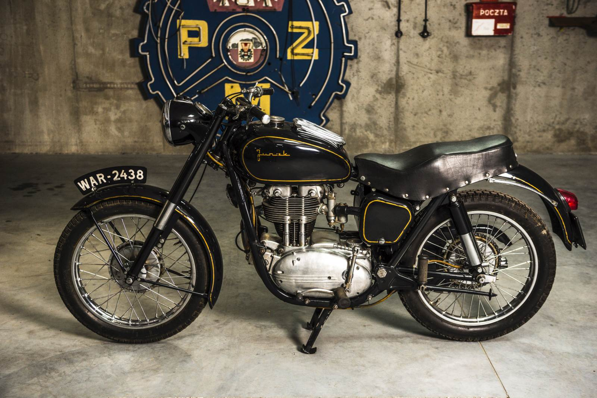

- Silnik: jednocylindrowy, czterosuwowy, górnozaworowy.
- Pojemność skokowa: 349 cm³.
- Stopień sprężania: 7:1.
- Moc maksymalna: 17 KM przy 5500 obr./min.
- Sprzęgło: mokre, wielotarczowe.
- Skrzynia biegów: o czterech przełożeniach, sterowana nożnie.
- Rama: kołyskowa, podwójna, zamknięta.
Projektowanie nowego motocykla czterosuwowego nawiązującego do przedwojennych Sokołów rozpoczęto w BKPMot w Warszawie już w roku 1952. Twórcami projektu byli inż. S. Poraziński - podwozie oraz inż. K. Wójcicki - silnik.
W pierwszej fazie (zachowane dokumenty fabryczne jak dotad nie potwierdzają tej wersji) planowano zastosować silnik klasy 500 ccm, lecz ostatecznie zdecydowano się na klasę 350 ccm.
Pierwszy prototyp już pod nazwą Junak wykonano w warsztatach WFM i przedstawiono go na wystawie dziesięciolecia we Wrocławiu w roku 1954.
Produkcję pojazdu zlokalizowano w dwóch miejscach - silniki w Wytwórni Sprzętu Mechanicznego w Łodzi, natomiast pozostałe elementy i montaż w Szczecińskich Zakładach Wyrobów Metalowych, których nazwę zmieniono później na Szczecińską Fabrykę Motocykli.
Rok 1956 zakończył się wyprodukowaniem serii próbnej 30 szt motocykli, a produkcję seryjną rozpoczęto w roku 1957.
Model M07 cechował się ramą przestrzenną o całkowicie nowej konstrukcji. Wytrzymała rama umożliwiała również montaż wózków bocznych, doczego przeznaczono specjalne gniazda.